Картография с основами топографии
Лекция 3. Определение координат точек местности
Геодезическая сеть
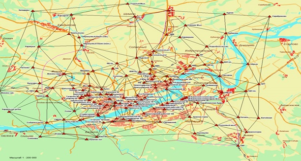
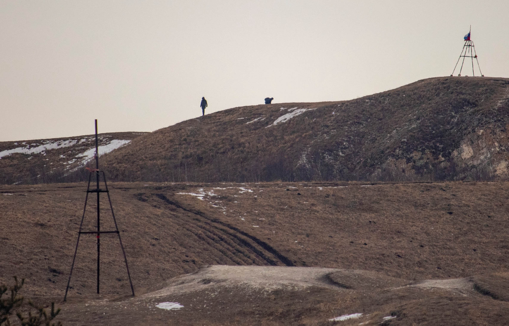
Геодезические пункты
- Сигналы
- Пирамиды
- Реперы
- Нивелирные марки
- …
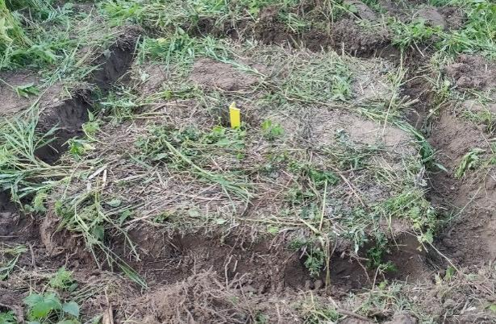
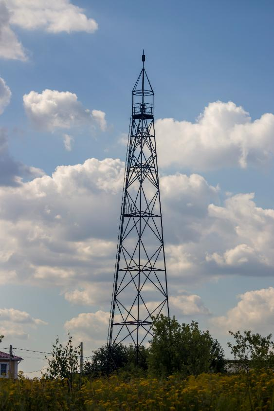
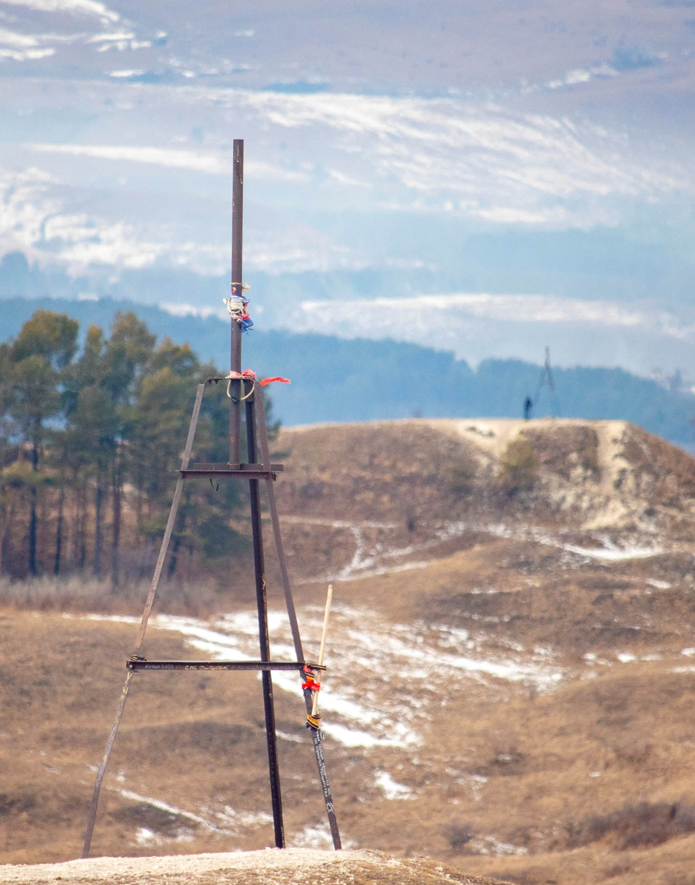
Для чего нам координаты точек?
Создание планово-высотного обоснования (ПВО)
Пикеты для создания плана/карты местности
Профилирование
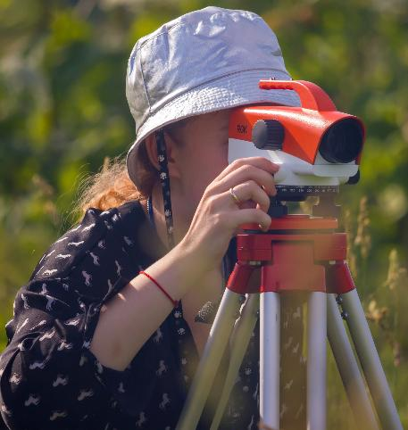
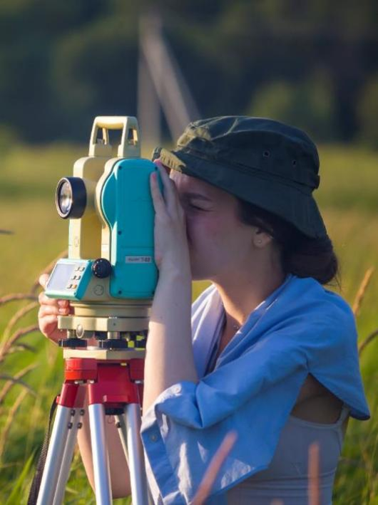
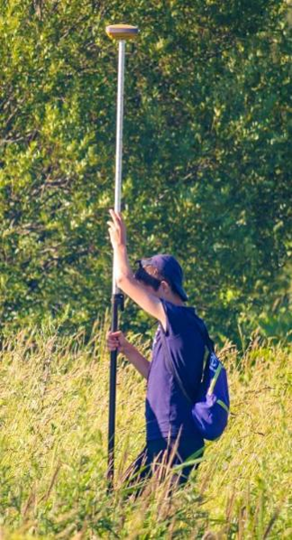
Геодезические измерения
В геодезии и топографии в полевых условиях проводят измерения:
- Длин линий
- Углов (вертикальных и горизонтальных)
- Превышений
- Координат точек
В камеральных условиях происходят вычисления (обработка) полевых данных

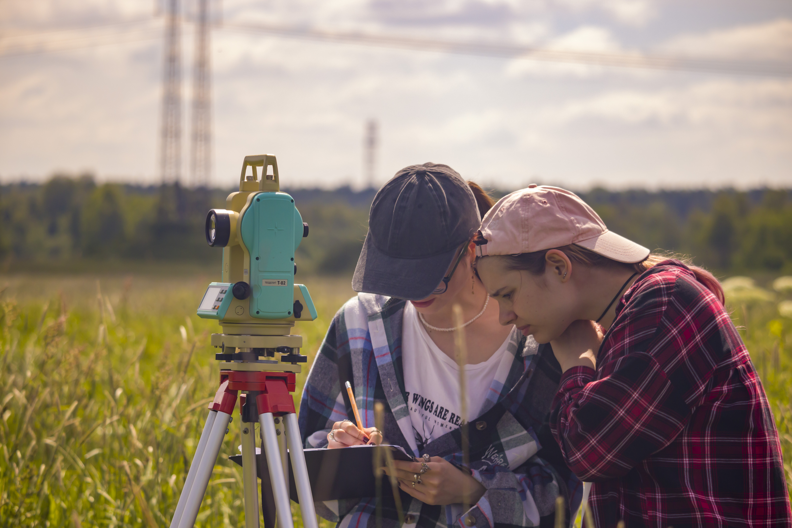
Погрешность измерений
– разность между результатом измерений и действительным значением измеряемой величины
- Грубые (ошибка исполнителя)
- Систематические (неисправность инструмента, влияние внешней среды, навыки исполнителя)
- Случайные
Равноточными измерениями считаются такие, при которых условия измерений постоянны
\[ a_{cp} = \frac{a_1 + a_2 + \cdots + a_n}{n} = \frac{\sum_{i=1}^{n} a_i}{n} \]
Невязка
– результат влияния погрешностей на точность измерений (расхождение теоретически вычисленных значений с измеренными)
- Фактические
- Допустимые
Невязки бывают:
- Угловые
- Линейные
- Высотные
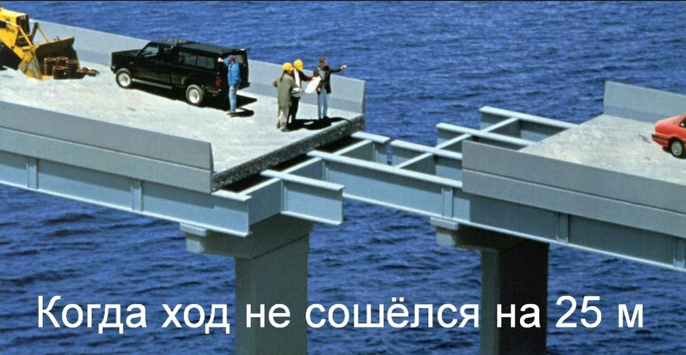
Инструменты для измерения углов
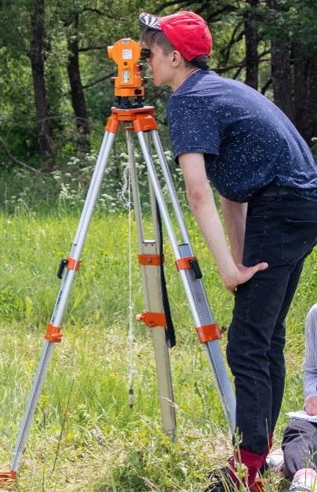
Теодолит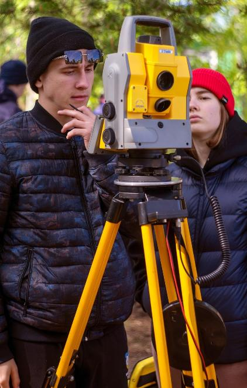
Тахеометр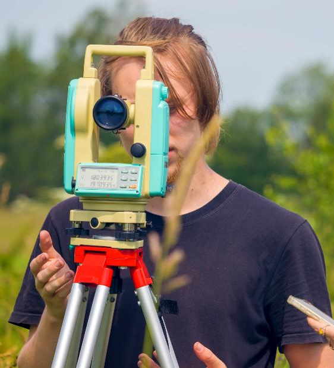
Электронный теодолитИнструменты для измерения длин линий
- Рулетка
- Нитяной дальномер
- Лазерный дальномер
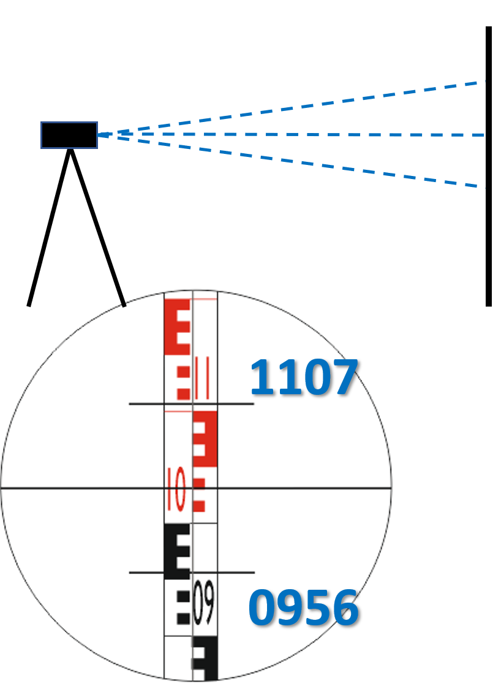
𝑆=(1107−0956)∙100=151∙100(мм)=15,1 (м)

Триангуляция
– метод определения плановых координат на основе измерений внутренних углов треугольников
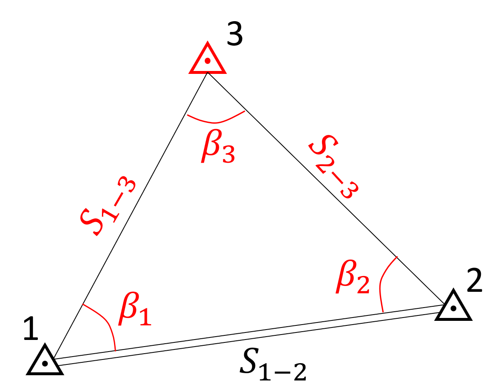
По теореме синусов:
\[ \frac{S_{1-2}}{\sin \color{red}\beta_{3}} = \frac{\color{red}{S_{2-3}}}{\sin \color{red}\beta_{1}} = \frac{\color{red}{S_{1-3}}}{\sin \color{red}\beta_{2}} \]
Геодезические засечки
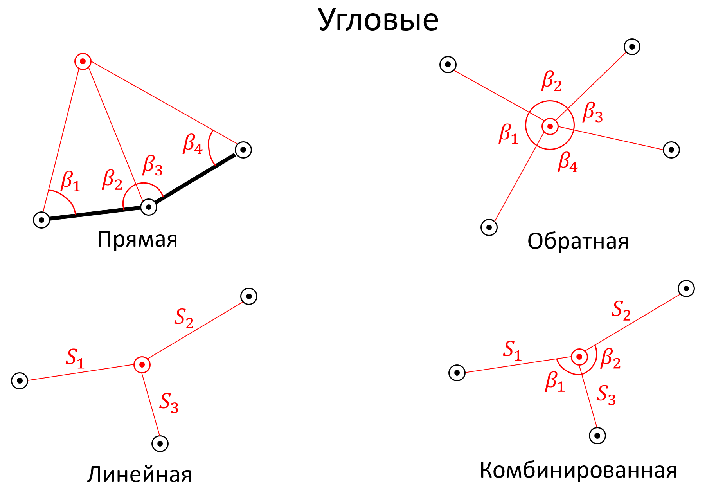
Теодолитные ходы
ТХ бывают замкнутые и разомкнутые
Невязки ТХ подразделяются на угловые и линейные
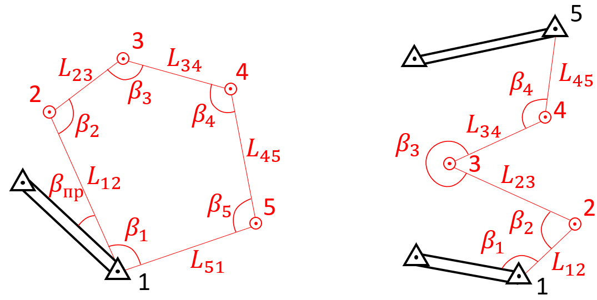
Расчёт координат теодолитного хода (1)
- Вычисление невязки горизонтальных углов для замкнутого n-угольника:
\[ f_\beta = \sum_{i=1}^{n} \beta_i - (n-2) \cdot 180^\circ \]
Уравнивание горизонтальных углов \(\beta_i\) (равномерно раскидывается): \(\beta_i' = \beta_i + \frac{f_\beta}{n}\)
Вычисление дирекционных углов сторон хода \(\alpha_i\):
\[ \alpha_{1-2} = \alpha_{\text{тв}} + \beta_{пр};\qquad \alpha_{2-3} = \alpha_{1-2} + 180^\circ - \beta_2; \]
- Вычисление приращений координат \(\Delta x_i\) и \(\Delta y_i\):
\[ \Delta x_i = L_i \cos \alpha_i; \qquad \Delta y_i = L_i \sin \alpha_i \]
Расчёт координат теодолитного хода (2)
- Вычисление невязок по приращениям координат:
\[ f_x = \sum_{i=1}^{n} \Delta x_i; \qquad \qquad f_y = \sum_{i=1}^{n} \Delta y_i \]
- Уравнивание приращений координат \(\Delta x_i\) и \(\Delta y_i\):
\[ \Delta x_i' = \Delta x_i + f_x \frac{L_i}{\sum_{i=1}^{n} L_i}; \qquad \Delta y_i' = \Delta y_i + f_y \frac{L_i}{\sum_{i=1}^{n} L_i} \]
- Вычисление координат точек \(x_i\) и \(y_i\):
\[ x_i = x_{i-1} + \Delta x_i'; \qquad y_i = y_{i-1} + \Delta y_i' \]
Нивелирование
Нивелирование – совокупность работ по определению высот местности
Тригонометрическое нивелирование – определение высот на основе измерения вертикальных углов и расстояний
В случае нитяного дальномера:
\[ {\color{red} h_{BA} = 0,5S \sin 2\nu + i - U} \]
или
\[ {\color{red} L = S\cos^2\nu} \]
\[ {\color{red} h_{BA} = Ltg\nu + i - U} \]
В случае лазерного дальномера:
\[ {\color{red} h_{BA} = S \sin\nu + i - U} \]
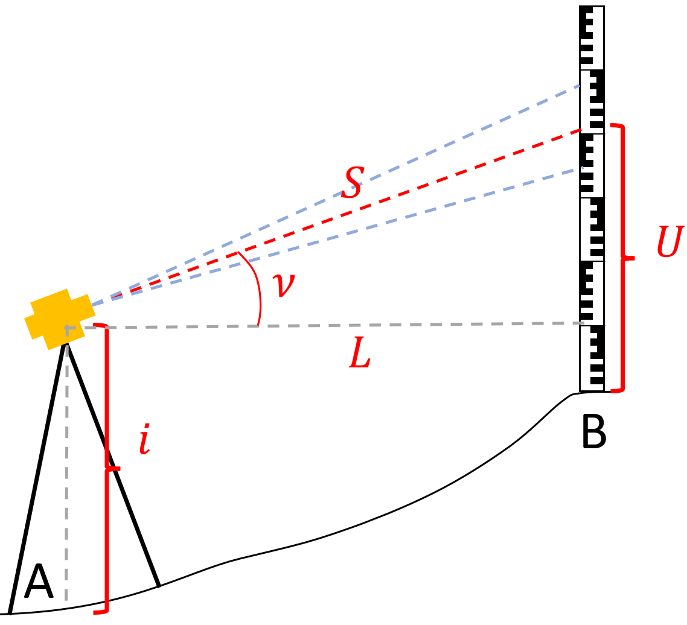
Геометрическое нивелирование
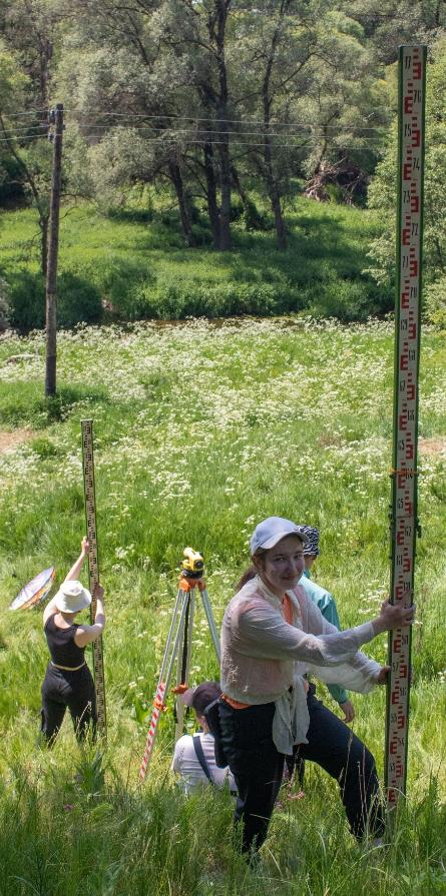
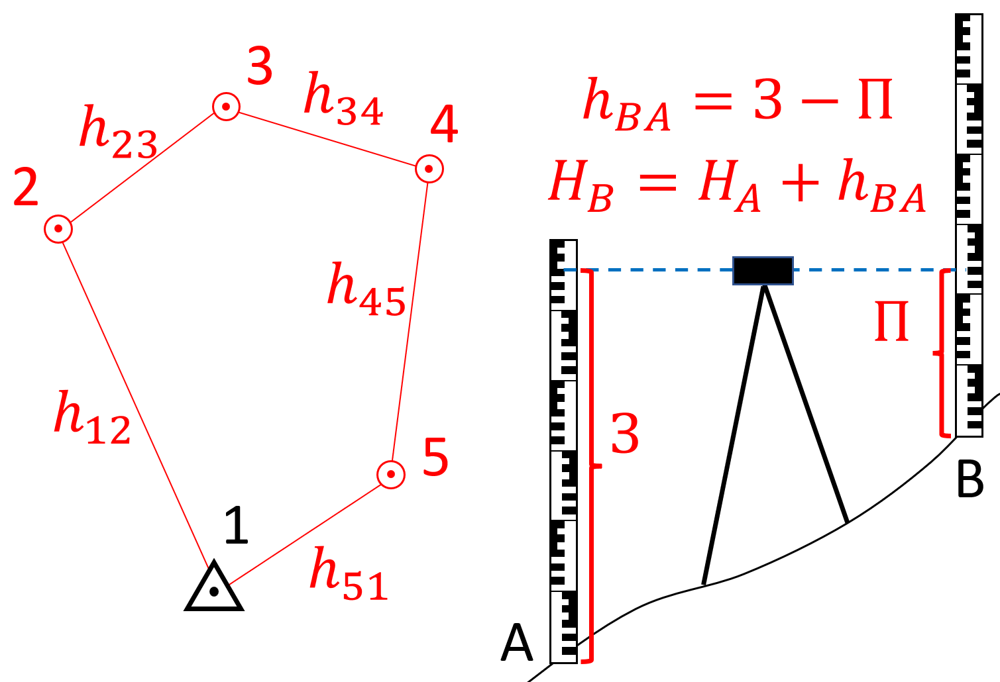
Невязка замкнутого нивелирного хода: \(f_h = \sum_{i=1}^{n} h_i\)
Уравнивание нивелирного хода
Допустимая невязка геометрического нивелирования
\[ f_{\text{доп }(\text{мм})} = \pm D_{(\text{мм})}\sqrt{L_{(\text{км})}} \]
\(L\) – длина хода, \(D\) – коэффициент класса точности
I класс: \(D = 3\) ; II класс: \(D = 5\) ; III класс: \(D = 10\) ; IV класс: \(D = 20\)
Допустимая невязка тригонометрического нивелирования
\[ f_{\text{доп }(\text{см})} = \pm 0,04\,S_{\text{ср }(\text{м})}\sqrt{n} \]
\(S_{\text{ср}}\) – средняя длина стороны, \(n\) – число станций
Уравнивание осуществляется пропорционально длинам сторон (плеч)
\[ h_i' = h_i + f_h \frac{L_i}{\sum_{i=1}^{n} L_i} \]
Тахеометрическая съёмка (1)
- Производится для составления плана местности
- Пикеты (ПК) – точки, координаты которых необходимо определить
- Координаты пикетов имеют пониженную точность
- Выполняется теодолитом или тахеометром только при КЛ
- Необходимо две твёрдые точки для получения нулевого направления
- Измеряются: горизонтальный угол \(\color{red}{\beta_{\text{ПК}}}\), расстояние \(\color{red}{S_{\text{ПК}}}\), вертикальный угол \(\color{red}{\nu_{\text{ПК}}}\) и высота визирования \((\color{red}{U_{\text{ПК}}})\)
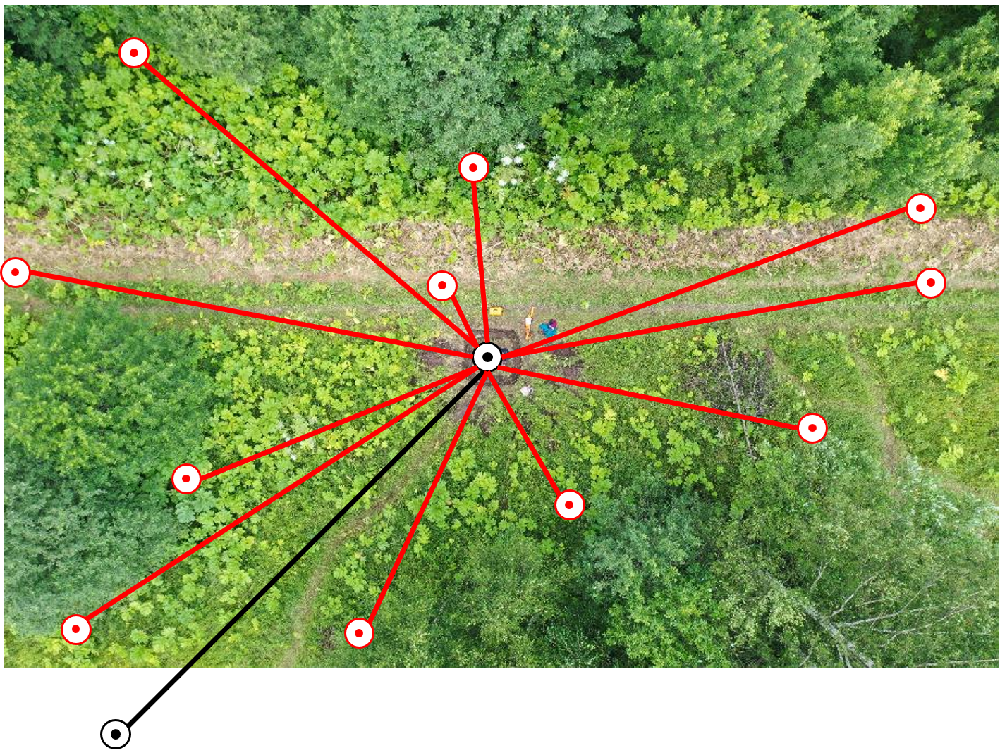
Тахеометрическая съёмка (2)
Для нахождения координат пикетов (ПК) используется прямая геодезическая задача
\[ \color{green}{\alpha_{\text{ПК}}} = \alpha_0 + 180^\circ + \color{red}{\beta_{\text{ПК}}} \]
\[ L_{\text{ПК}} = \color{red}{S_{\text{ПК}}}\cos^2 \color{red}{\nu_{\text{ПК}}} \]
\[ \begin{pmatrix} \Delta x_{\text{ПК}} \\ \Delta y_{\text{ПК}} \end{pmatrix} = \begin{pmatrix} L_{\text{ПК}}\cos \color{green}{\alpha_{\text{ПК}}} \\ L_{\text{ПК}}\sin \color{green}{\alpha_{\text{ПК}}} \end{pmatrix} \]
\[ \begin{pmatrix} x_{\text{ПК}} \\ y_{\text{ПК}} \end{pmatrix} = \begin{pmatrix} x_{\text{ст}} + \Delta x_{\text{ПК}} \\ y_{\text{ст}} + \Delta y_{\text{ПК}} \end{pmatrix} \]
\[ h_{\text{ПК}} = 0,5\,\color{red}{S_{\text{ПК}}}\sin(2\color{red}{\nu_{\text{ПК}}}) + i - \color{red}{U_{\text{ПК}}} \]
\[ H_{\text{ПК}} = H_{\text{ст}} + h_{\text{ПК}} \]
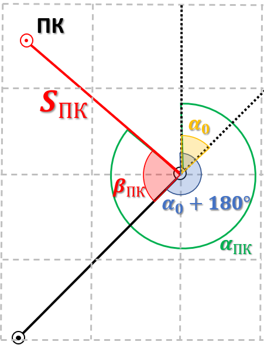
Глобальные навигационные спутниковые системы (ГНСС)
Спутниковое позиционирование – определение координат точки с помощью ГНСС
Глобальные системы
- GPS (США) – 32 спутника
- ГЛОНАСС (Россия) – 26 спутников
- Galileo (Европейский Союз) – 32 спутника
- Beidou (Китай) – 48 спутников
Региональные и уточняющие подсистемы
- IRNSS (Индия)
- QZSS (Япония)
- …
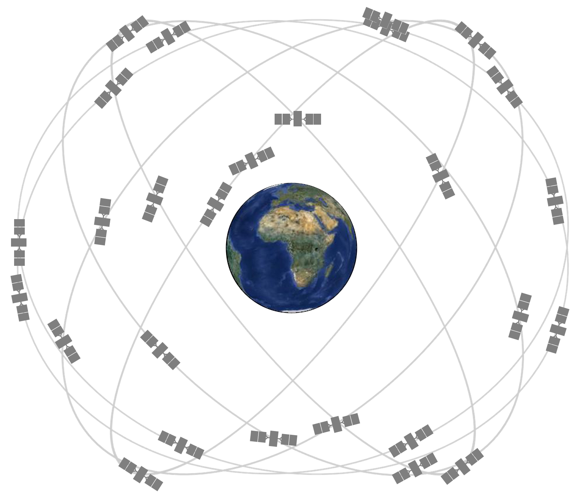
Принципы работы ГНСС
У спутников известны эфемериды – параметры орбиты
Все спутники, приёмники и наземные станции синхронизированы по атомным часам
Спутники непрерывно передают сигналы, содержащие информацию о времени передачи и эфемеридах
Беззапросный метод линейной пространственной засечки – измеряются дальности до 3 и более спутников
Кодовый метод измерения дальности до спутника
Одинаковый сигнал, представляющий собой псевдослучайную последовательность 0 и 1, генерируется на спутнике и приёмнике
Сигнал синхронизирован, но за время прохождения от спутника до приёмника происходит смещение сигнала
\(\color{blue}{Спутник}\)
\(\color{red}{Приёмник}\)
\[ s = c\left(t_{\text{приёма}} - t_{\text{начала}}\right) = c\Delta t \]
Фазовый метод измерения дальности до спутника
Длина волны \(\lambda\) – расстояние, на которое распространяется волна за один период колебаний
В ГНСС используется длина волны \(L_1\) (около 19 см) и \(L_2\) (около 24 см)
Рассчитывается количество целых длин волн \(N\), прошедших от спутника до приёмника, и дробная часть волны (фаза \(\varphi\))
\[ s = N{\color{#88A6E8}\lambda} + {\color{#E7A06B}\varphi} \]
Факторы погрешностей измерений
Влияет:
- Ионосфера
- Тропосфера
- Физические препятствия
- Многолучевость
- Геометрический фактор
- Несинхронность часов
Повышает точность:
- Увеличение времени позиционирования
- Использование нескольких спутниковых систем
- Использование многочастотных приёмников
- Планирование наблюдений с учётом созвездий спутников
- Одновременное наблюдение несколькими приёмниками
Дифференциальное позиционирование
Используется одновременно, как минимум, два приёмника
На базовой станции рассчитываются дифференциальные поправки
Дифференциальные поправки добавляются к координатам на ровере
Работа в режиме статики и кинематики (RTK)
\[ \begin{pmatrix} \Delta x \\ \Delta y \\ \Delta z \end{pmatrix} = \begin{pmatrix} x_{\text{базы}} \\ y_{\text{базы}} \\ z_{\text{базы}} \end{pmatrix} - \begin{pmatrix} x_{\text{изм}} \\ y_{\text{изм}} \\ z_{\text{изм}} \end{pmatrix} \]
\[ \begin{pmatrix} x_{\text{ровера}} \\ y_{\text{ровера}} \\ z_{\text{ровера}} \end{pmatrix} = \begin{pmatrix} x_{\text{изм}} \\ y_{\text{изм}} \\ z_{\text{изм}} \end{pmatrix} + \begin{pmatrix} \Delta x \\ \Delta y \\ \Delta z \end{pmatrix} \]
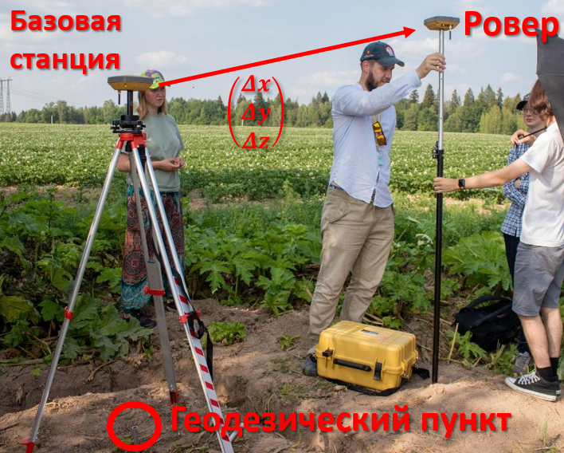
Способы позиционирования
Точность определения плановых координат
| Автономный | Дифференциальный | |
|---|---|---|
| Кодовый | 5-15 м | 1-3 м |
| Фазовый | 0,5-3 м | 0,001-0,03 м |
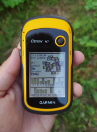
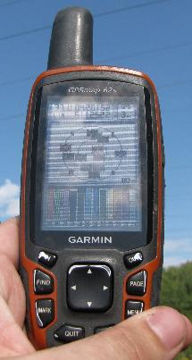
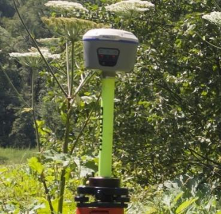
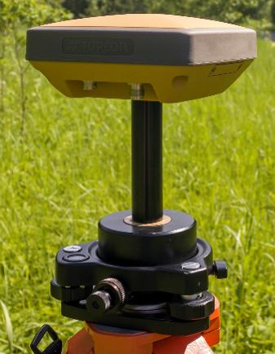
Сюрприз № 4
https://forms.gle/yz2bRLN7ZQi4MBa66
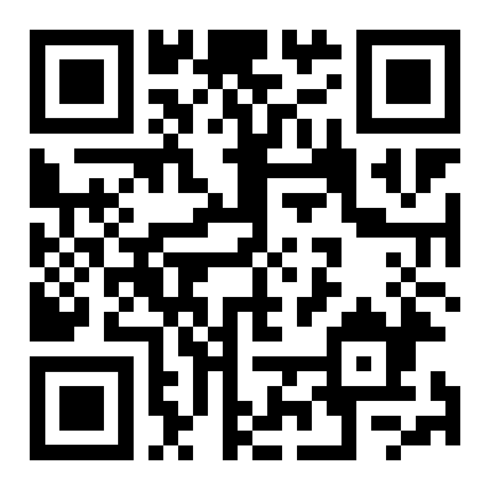
Карпачевский А.М. · Картография с основами топографии · Лекция 3. Определение координат точек местности